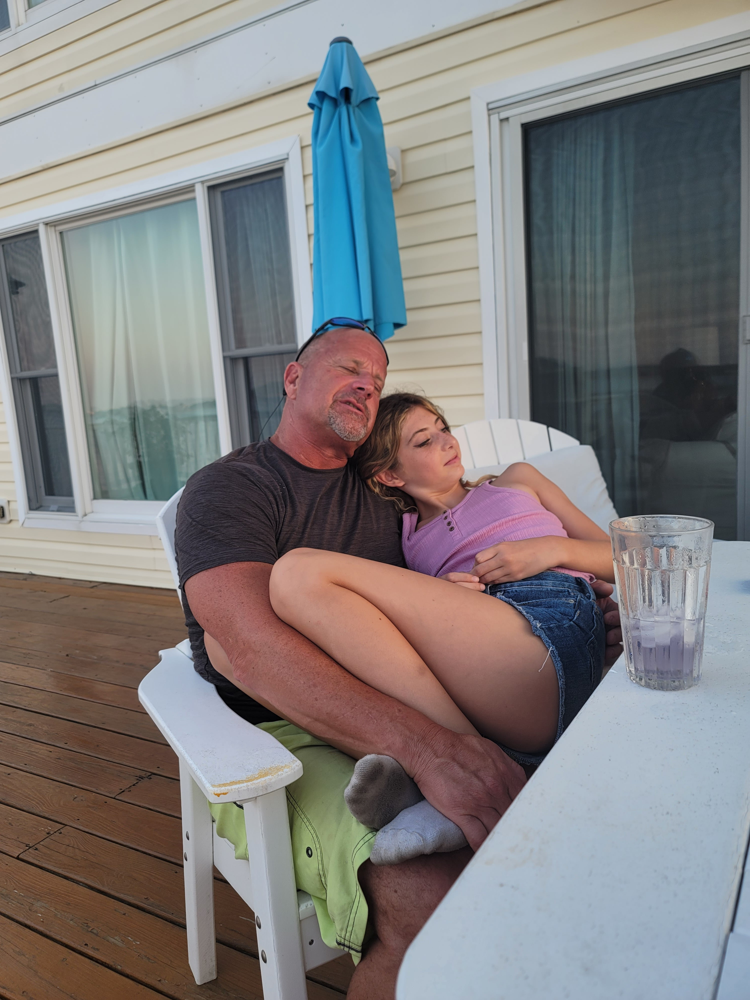

<!DOCTYPE html>
<html lang="en">
</html>
<head> 
    <meta charset="UTF-8">
    <meta name="viewport" content="width=device-width,initial-scale=1.0">
    <meta http-equiv="X-UA-Compatible" content="ie=edge">   
    <title>Passero</title>
    <link rel="stylesheet" href="stylesheet.css">
</head>
<header>
   
    <div class="header">
        <h1 class="logo">Passero Family</h1>
   <nav>
    <ul class="list">
        <li class="child"><a href="#">Home</a></li>
        <li class="child"><a href="#">Memories</a></li>
        <li class="child"><a href="#">Life Story</a></li>
    </ul>
</nav>
</div>
<div class="container">

<div class="box">In loving Memory of Joseph Anthony Passero</div>
</div>
</div>
</header>
<body>
<div class="content">
    <div class="box-1"></div>
    <div class="box-2"></div>
    <div class="box-3"></div>
    <div class="box-4"></div>
</div>
    
    
    <h1 class="title">Welcome to the Passero Family</h1>
    <p class="text">This is a tribute to the Passero family, celebrating our heritage and the legacy of our beloved father, Joseph Anthony Passero. We are a close-knit family, bound by love and shared memories.</p>


<h2 class="title">We are like a family</h2>
<p class="text">I am dedicating this webpage to my late father, Joseph Anthony Passero. He was a strong and independent man, who took nothing from noone. Whenever he would walk into a room, it was like a spotlight shined on him. He got everyones attention, and people could not help but approach him. He will be missed dearly, by so many friends and family.</p>
<p class="text">He is leaving behind 5 beautiful children, who he gave his all to. He constantly pushed them to do better in life, even if his approach was not always the best way to go about things. His oldest son, Frank Anthony Passero, was his pride and joy, he is a spitting image of his father and Joe would be proud of the man he is today, and continues to become. His middle son, Joseph John Passero, did not always see eye to eye, but there was a mutual respect for eachother and they loved eachother dearly. Joseph is currently working on bettering himself, to provide a better future for him and his partner, George F Oakley. He is currently studying webdesign and business.</p>    
</body>
